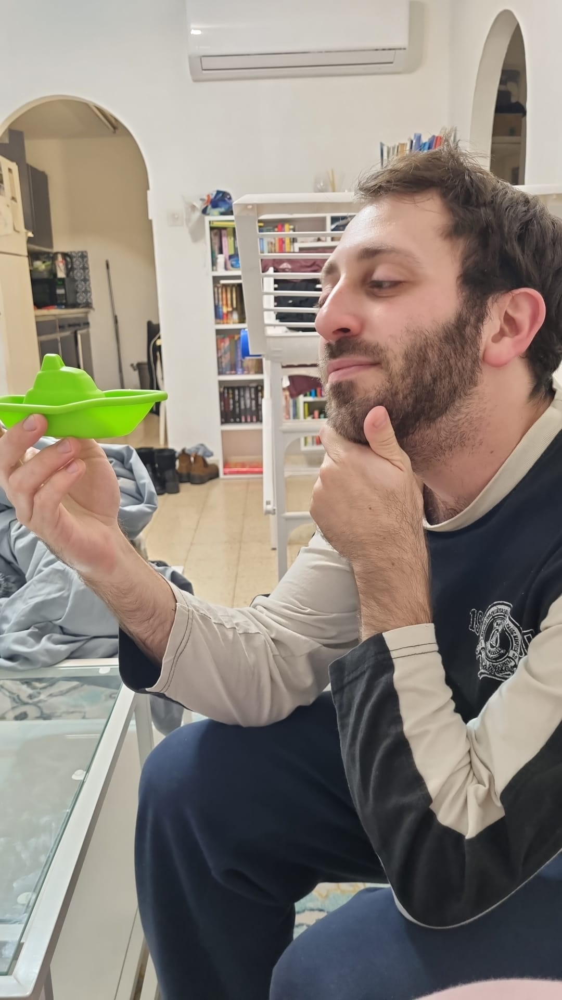

This site was created by the very handsome (as stated by his lovely wife who helped with the design) John Bryce student Ya'acov Young.
You can reach out to me via my email youngyaacov@gmail.com
See more about me at my LinkedIn or my GitHub
The site gathers and displays information about cryptocurrency. On the home page are displayed coins from CoinGecko, our information provider.
For each coin you can get more information by clicking the "More Info" button and you can filter your display by symbol or name using the search bar.
Furthermore, you can add up to five coins to your favourites and on the coins report page, generate a graph of the coins' state over a period of time of your choice, using data from CryptoCompare.
I hope you enjoy the site, and please feel free to contact me and send ideas for improvements and information on any bugs you come across.